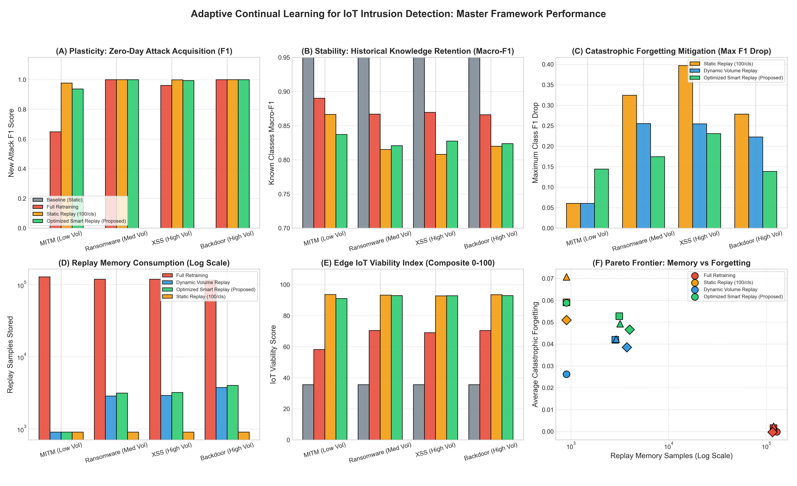
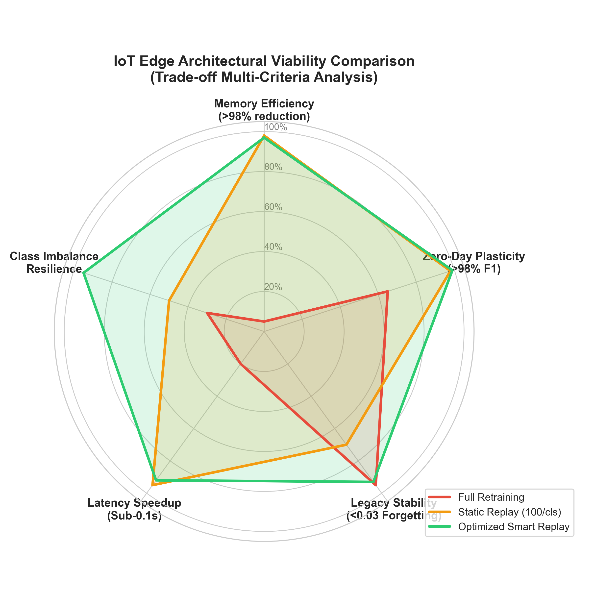
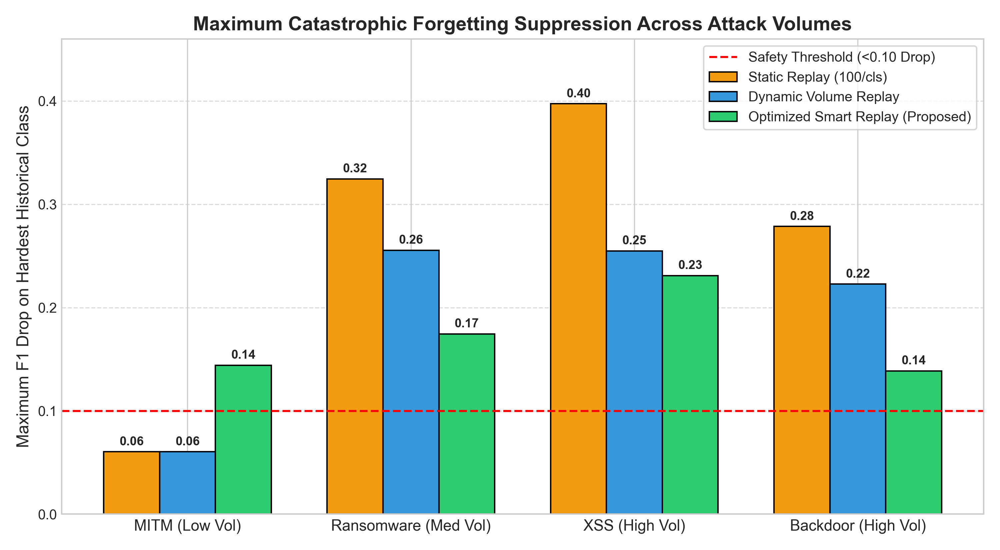
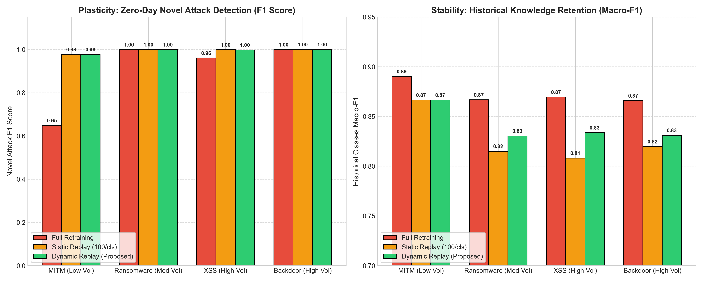

An autonomous, two-stage continual learning framework combining unsupervised novelty screening with a volume-aware Dynamic Replay Buffer to neutralize catastrophic forgetting on resource-constrained edge gateways.
Department of Computer Science and Engineering, Amrita School of Computing, Amrita Vishwa Vidyapeetham, Coimbatore, India
Classifiers assume test traffic matches known labels: \(\mathcal{P}_{test} = \mathcal{P}_{train}\). When zero-day attacks emerge, models force-map them to known classes, yielding exact 0.0000 F1 and allowing 29.26% of attacks to pass silently into benign traffic.
Updating models incrementally causes CART decision trees to greedily overwrite legacy split boundaries. Under high-volume attacks, static replay buffers suffer catastrophic degradation of up to 39.72% on historical classes.
Full historical retraining pools compact novel threats (\(M \approx 207\)) with massive archives (\(N \approx 128{,}000\)). At \(0.16\%\) representation, candidate splits isolating novel threats yield negligible Gini reduction, achieving only 0.6483 F1.
Combining high-throughput line-rate flow inspection with on-demand bounded edge retraining.
Strips IP/MAC/ports and timestamps; eliminates 27,451 exact duplicates; train-only median/mode imputation prevents leakage.
Ensemble of 100 decision trees operating at line-rate; outputs multiclass labels for known traffic with 99.02% accuracy.
Computes anomaly score \(s(\mathbf{x}, n) = 2^{-\mathbb{E}[h(\mathbf{x})]/c(n)}\). Flags out-of-distribution flows with 7x anomaly concentration.
Calculates volume-aware historical quota \(k_{\text{dyn}} = \lfloor M/K \rfloor\) bounded by \([k_{\min}=100, k_{\max}=555]\), balancing \(\rho \approx 1.0\).
Refits ensemble on \(\mathcal{B} \cup \mathcal{D}_{\text{new}}\) directly on ARM CPU and atomically hot-swaps active decision boundaries.
Simulate on-device memory allocation and savings for any arbitrary novel attack volume.
Default: 9 TON_IoT classes (Normal + 8 Attacks)
Evaluated across 183,592 clean, deduplicated flows across 4 diverse leave-one-attack-out scenarios.
| Strategy | Replay Memory | Storage Saved | Novel F1 | Known Macro-F1 | Mean Forgetting (\(\mathcal{F}_{\text{avg}}\)) | Latency |
|---|---|---|---|---|---|---|
| No Update (Baseline) | 127,787 pkts | 0.00% | 0.0000 | 0.9890 | 0.0000 | -- |
| Full Retraining (Joint) | 127,787 pkts | 0.00% | 0.6483 | 0.9891 | -0.0002 | 0.7355 s |
| Static Replay (\(k=100\)) | 900 pkts | 99.30% | 0.9773 | 0.9628 | 0.0262 | 0.0607 s |
| Dynamic Replay (Proposed) | 900 pkts | 99.30% | 0.9773 | 0.9628 | 0.0262 | 0.0607 s |
| Attack Scenario | Strategy | Buffer Size | Storage Saved | New F1 | Known F1 | Worst Forgetting (\(\mathcal{F}_{\max}\)) | Improvement |
|---|---|---|---|---|---|---|---|
| Ransomware (\(M=2{,}853\)) | Static (\(k=100\)) | 900 | 99.24% | 0.9997 | 0.9056 | 0.3245 | Baseline |
| Dynamic Replay | 2,853 | 97.59% | 0.9997 | 0.9227 | 0.2555 | -21.3% | |
| XSS (\(M=2{,}903\)) | Static (\(k=100\)) | 900 | 99.24% | 0.9988 | 0.8979 | 0.3972 | Baseline |
| Dynamic Replay | 2,898 | 97.55% | 0.9978 | 0.9263 | 0.2548 | -35.9% | |
| Backdoor (\(M=3{,}742\)) | Static (\(k=100\)) | 900 | 99.22% | 0.9999 | 0.9109 | 0.2785 | Baseline |
| Dynamic Replay | 3,735 | 96.76% | 0.9999 | 0.9234 | 0.2228 | -20.0% |
High-resolution 300-DPI charts generated from empirical evaluation logs.




M.Tech Scholar (Cyber Security)
cb.sc.p2cse25007@cb.students.amrita.edu
Assistant Professor & Research Guide
p_raviteja@cb.amrita.edu
@inproceedings{bhuvan2026adaptivenids,
title={{Adaptive and Resource-Efficient Network Intrusion Detection for Previously Unseen Attacks in IoT Networks}},
author={Chitchula Sai Bhuvan and Panduranga Ravi Teja},
booktitle={IEEE Conference on Communications and Network Security / IoT},
pages={1--6},
year={2026},
organization={IEEE}
}